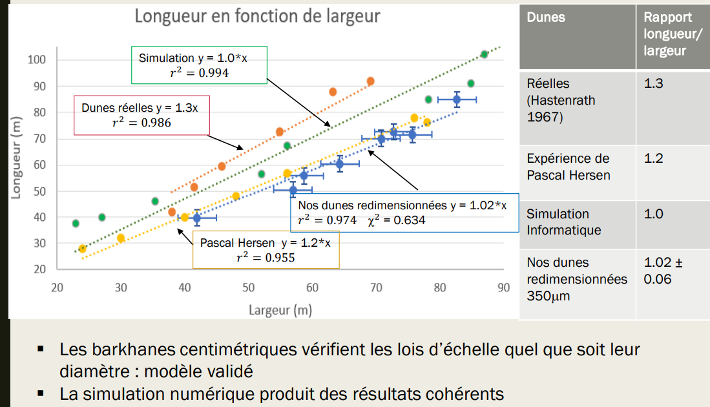
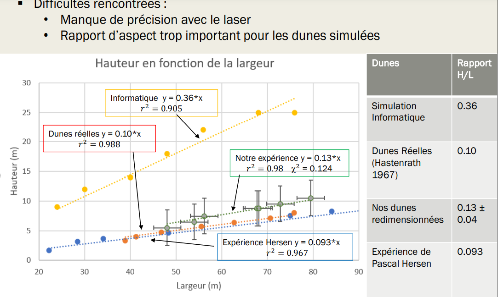
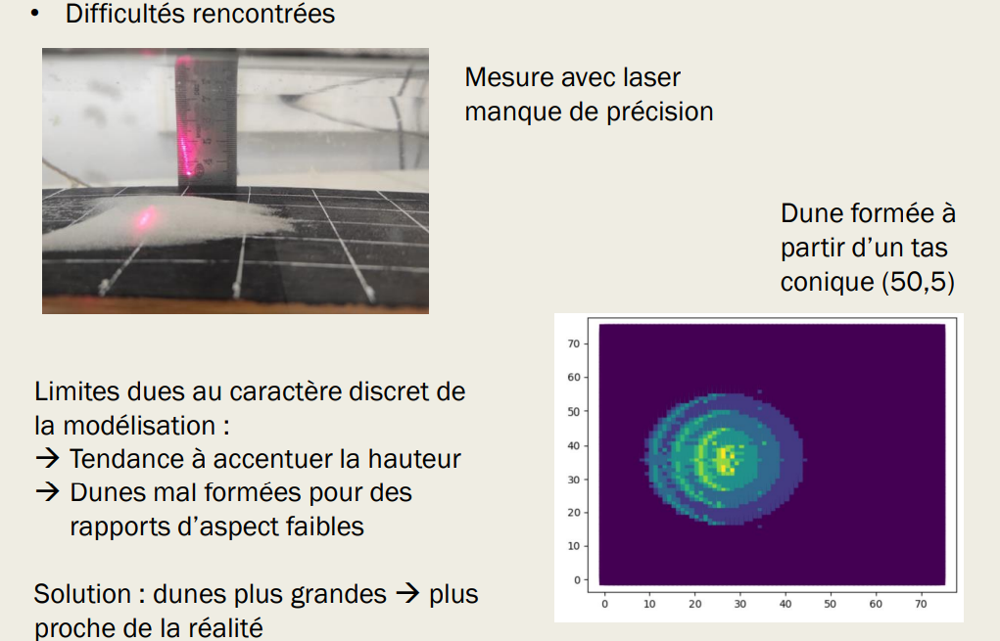
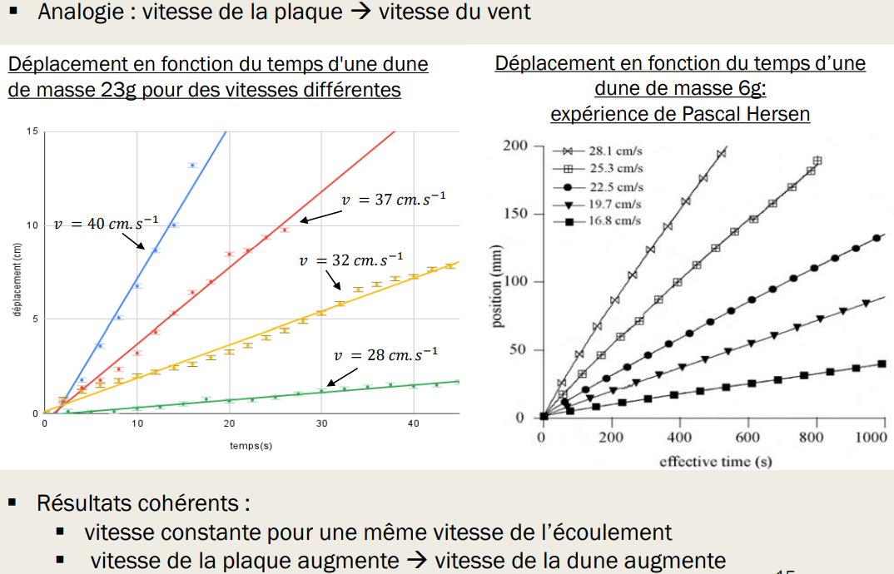
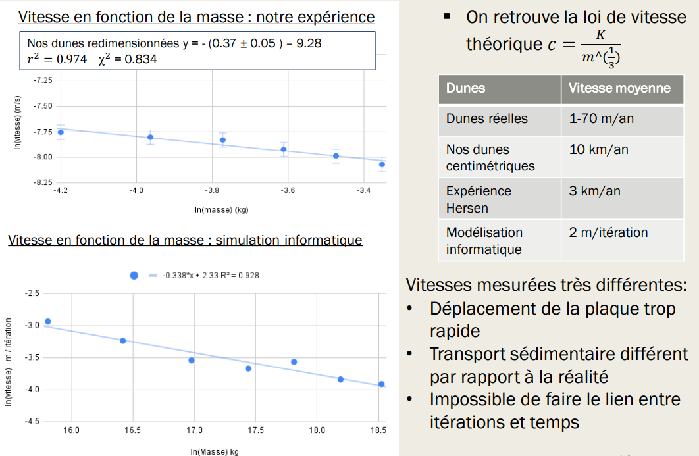

La longévité des formes barkhanoides obtenues dans l’expérience à petite échelle ainsi que les dunes simulées sur python nous incitent à faire un lien entre ces modélisations et les dunes réelles pour étudier si ces modélisations sont cohérentes avec les mesures prises dans la nature. On observe tout d’abord que les dunes simulées et à petite échelle présentent toutes une forme en croissant avec deux cornes aux extrémités.
Pour vérifier si ces modélisations nous permettent de former de véritables barkhanes, il faut étudier les dimensions des dunes obtenues.
Après redimensionnement des mesures par ldrag, on observe que les dunes à petite échelle se superposent aux dunes réelles et vérifient les mêmes lois expérimentales : largeur et longueur sont bien équivalentes. On peut donc conclure que l’expérience est fructueuse. La simulation informatique vérifie elle aussi les critères expérimentaux observés pour les barkhanes.
Nous avons cependant rencontré des problèmes pour la mesure de la hauteur. Pour les barkhanes à petite échelle, même si l’on retrouve le bon ordre de grandeur pour les dimensions, la mesure de la hauteur ( inférieure à 1 cm), s’est révélée difficile. Nous avons cherché à les pointer avec un laser mais nous avions une très mauvaise précision. Les dunes possédaient souvent des hauteurs très proches, impossible à distinguer. Pour les dunes simulées, on trouve une proportionnalité de 0,4, qui ne correspond pas aux observations expérimentales
Cela est du en partie au caractère discret de la modélisation qui montre ses limites. Pour des rapports d’aspect trop faibles, les règles ne fonctionnent pas bien et tendent par elles même à accentuer les hauteurs. La formation de dunes plus grandes, réduisant ce caractère discret, semble permettre la formation de dunes plus fidèles à la réalité
Pour véritablement valider les modèles, il faut s’assurer que les dunes à petite échelle et les dunes simulées vérifient la même loi de vitesse que les dunes réelles. C’est même la grandeur la plus intéressante dans un objectif de prévention de l’ensablement.
Nous avons cherché tout d’abord à étudier l’influence de la vitesse de la plaque, que l’on peut assimiler à la vitesse de vent apparent dans le désert, sur le déplacement de la dune. On observe que pour une vitesse de plaque donnée, la vitesse de la dune est constante, ce qui souligne la stabilité des formes barkhanes, elles perdent peu de sable au cours du temps et changent peu de forme. De plus, on observe qualitativement qu’une augmentation de la vitesse de la plaque entraine une augmentation de la vitesse de la dune, avec une vitesse limite à partir de laquelle elle n’est plus stable. Un résultat que le scientifique Pascal Hersen a pu lui aussi obtenir.
En plus de ces résultats qualitatifs nous voulions plus précisement vérifier si nos dunes à petite échelle et nos dunes simulées vérifient la loi de vitesse théorique présentée plus tôt. Un bilan de masse sur la dune nous permet de relier masse et hauteur. Or celle-ci est difficile à mesurer, on utilise les rapports constants pour relier vitesse et masse. On approxime en négligeant les pertes par les cornes car la vitesse de déplacement de la dune est importante par rapport aux temps caractéristiques de son évolution morphologique dues aux pertes. On étudie donc le déplacement de la dune sur la plaque en fonction du temps pour obtenir sa vitesse. On observe dans les deux situations que l’on a bien un lien entre la vitesse de la dune et le puissance tiers de leur masse. On observe cependant des grandes différences dans la constante K de proportionnalité qui dépend du flux sur la crête. Ainsi, comme l’a retrouvé le scientifique Pascal Hersen, nos dunes sont trop rapides : ceci peut être dû au déplacement de la plaque sûrement trop rapide. En effet, avec des déplacements plus lents, Pascal Hersen arrive déjà à diminuer la vitesse des dunes et il est difficile de faire le lien entre vitesse de l’écoulement dans notre expérience et vitesse de la plaque. Pour la simulation informatique, on arrive rapidement aux limites de la modélisation. Tout d’abord, il est difficile de faire le lien entre nombre d’itérations du programme et temps réel. D’autre part, la décision de poser arbitrairement 1 valeur = 1m pour faire l’analogie montre à nouveau ici ces limites : avoir des comparaisons plus cohérentes nécessiterait sûrement de former, comme l’on a vu pour la hauteur, de former des dunes de tailles beaucoup plus importantes.
 Retour Sommaire Vers prochaine page